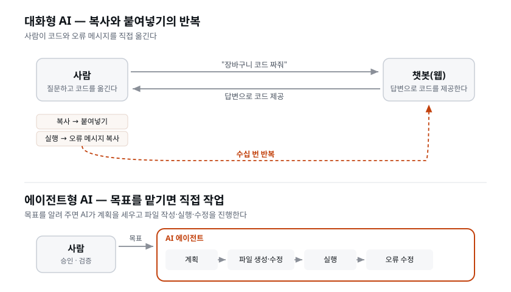

이 장을 마치면 내 PC에 Claude Code를 설치하고 계정 인증까지 완료한다. 코드를 한 줄도 직접 작성하지 않고 우리 회사의 새 서비스 '온티켓(OnTicket)'의 첫 페이지를 만들어 브라우저에서 확인할 수 있다.
AI로 개발을 해 본 사람이라면 대부분 이런 식으로 일해 왔을 것이다.
이 방식에는 구조적인 한계가 있다. 챗봇은 말만 할 수 있다. 내 컴퓨터의 파일을 직접 만들 수 없고, 프로그램을 실행할 수 없고, 에러 화면을 직접 볼 수도 없다. 그래서 사람이 챗봇과 내 컴퓨터 사이를 오가며 코드와 에러 메시지를 옮겨야 했다. 기능 하나를 만드는 데도 이 일을 수십 번씩 반복했다.
문제는 시간만이 아니다. 이 방식에서는 AI가 전체 맥락을 모른다. 내 프로젝트에 어떤 파일이 있는지, 방금 고친 코드가 다른 파일과 어떻게 연결되는지 챗봇은 알지 못한다. 매번 다시 설명해야 하고, 설명이 빠지면 엉뚱한 코드를 내놓는다. 그리고 사람이 옮겨 적는 과정에서 오타가 섞이거나, 답변의 일부만 복사하거나, 여러 파일에 나눠 붙일 위치를 헷갈리는 등 코드를 옮기는 과정에서 새로운 버그가 생기기도 한다.
에이전트(agent)는 다르다. 에이전트형 AI에게 목표를 알려 주면 AI가 다음 작업을 스스로 수행한다.
사람이 코드를 일일이 옮길 필요가 없다. 두 방식의 차이를 그림으로 살펴보자.

'에이전트'라는 말의 뜻을 알면 개념을 더 쉽게 이해할 수 있다. 에이전트는 원래 대리인이라는 뜻이다. 부동산 에이전트가 집주인을 대신해 집을 보여주고 계약을 진행하듯, 소프트웨어 에이전트는 사람을 대신해 목표를 달성할 때까지 여러 단계의 작업을 스스로 수행하는 프로그램을 말한다. 핵심은 여러 단계를 스스로 진행한다는 점이다. 대화형 AI는 질문을 받고 답하지만, 에이전트형 AI는 목표를 받아 계획·실행·점검·수정을 반복한다.
[짚고 가기] 두 방식의 차이가 이 장에서 가장 중요한 개념이다. 직접 비교해 보면 확실히 와닿는다. 웹 챗봇 창과 Claude Code 터미널을 나란히 띄워, 같은 요청("소개 페이지 만들어줘")을 양쪽에 줘 보자. 챗봇은 코드를 답변으로 제시하고 멈추지만, Claude Code는 파일을 만들고 브라우저에서 확인하는 작업까지 스스로 진행한다. "말하는 AI vs 일하는 AI"라는 한마디로 정리된다.
"AI가 다 하면 나는 뭘 하지?"라는 질문이 나올 수밖에 없다. 사람은 개발의 방향을 정하고 결과를 판단하는 일을 맡는다.
| 사람의 일 | 구체적으로 |
|---|---|
| 결정 | 무엇을 만들지, 무엇을 뺄지, 어떤 기술을 쓸지 정한다 |
| 승인 | AI가 하려는 변경(파일 생성·수정, 명령 실행)을 검토하고 허락한다 |
| 검증 | 결과가 기준을 통과했는지 확인한다. 통과 기준 자체도 사람이 정한다 |
코드를 직접 작성하는 시간은 줄고, 판단하는 시간이 늘어난다. 3일간의 교육 과정에서 여러분이 연습할 일이 바로 이 판단이다. 회사의 개발팀도 같은 구조로 일한다. 기획 담당자가 방향을 정하고, 개발자가 구현하고, 리뷰어가 승인하고, QA가 검증한다. 이 과정에서는 각 역할을 AI에게 맡기고, 사람이 전체 작업을 이끌어 간다.
한 가지는 분명히 해 두자. "판단하는 시간이 늘어난다"는 것은 일이 더 어려워진다는 뜻이 아니라 일의 종류가 바뀐다는 뜻이다. 문법을 외우고 오타를 잡는 데 쓰던 노력을 좋은 서비스와 쓸 만한 결과물을 판단하는 데 쓴다. 이런 판단에는 개발자가 아닌 사람도 자신의 경험과 감각을 활용할 수 있다. 그래서 비개발자도 이 방식으로 개발에 더 쉽게 참여할 수 있다.
실습에서는 다음 상황을 가정한다. 우리 회사 (주)승승장구가 새 서비스로 '온티켓(OnTicket)'을 개발하려 한다. 승승장구는 그동안 자사 공연·행사 티켓을 인터파크 같은 예매 플랫폼에 올려 팔아 왔는데, 수수료가 비싸다. 그래서 우리 공연 티켓을 직접 판매할 사이트를 만들기로 했다. 목표는 3일 안에 첫 버전 출시다.
만들 기능은 다음과 같다.
3일간의 진행 순서는 다음과 같다.
| 일정 | 하는 일 | 하루를 마치면 |
|---|---|---|
| Day 1 | 기획(PRD·범위 결정), AI 개발팀 구성 원리, 화면기획서·디자인, 프로토타입·디자인 리뷰, 아키텍처 결정, 두 앱의 뼈대 | 설계와 팀 구성이 끝나고 앱의 기본 구조가 갖춰진다 |
| Day 2 | DB 설계·구축, API 명세서, 백엔드, 프론트, 검증(리뷰/QA/보안), 인프라, 결제 | 내 PC에서 예매부터 QR까지 동작한다 |
| Day 3 | 테스트 자동화, CI/CD, 클라우드 배포, 장애 대응 | 실제 인터넷 주소(URL)로 서비스에 접속할 수 있다 |
마지막 날, 옆자리 사람이 여러분의 URL로 접속해 티켓을 예매할 수 있으면 성공이다.
전체 작업 순서는 다음과 같다.
회의록 → 기획 → 화면 설계 → 아키텍처 → DB 설계 → API 명세서 → 백엔드 → 프론트 → 검증 → 배포
회사에서 프로젝트를 진행하는 순서와 같다. 각 단계에서는 앞 단계의 결과물을 바탕으로 작업한다.
[짚고 가기] '온티켓'은 3일 내내 이어지는 하나의 프로젝트다. 매 실습이 독립된 예제가 아니라 하나의 서비스를 완성해 가는 과정임을 알아두면, 지금 하는 작업이 전체 개발 과정에서 어떤 단계에 해당하는지 이해하기 쉽다. "인터파크 수수료가 아까워서 우리가 직접 판다"는 동기는 실제 소상공인·기획사가 흔히 겪는 상황이라, 남의 이야기가 아니라 내 이야기처럼 다가온다.
이 장에서 처음 만나는 용어들이다. 앞으로 3일 내내 쓰이므로 여기서 뜻을 알아두자. 개발이 처음이라면 이 절이 가장 낯설 수 있는데, 완벽히 외울 필요는 없다. "이런 게 있구나" 정도로 눈에 익혀 두면 실습하면서 자연스럽게 익숙해진다.
터미널은 마우스 클릭 대신 글자로 명령을 입력해서 컴퓨터를 조작하는 창이다. 명령어를 입력해 폴더를 만들고, 프로그램을 실행하고, 파일을 옮길 수 있다. 개발 도구의 상당수가 터미널에서 실행되기 때문에, 개발을 하려면 터미널과 친해져야 한다. 다만 이 과정에서는 명령어를 외울 필요가 거의 없다. 대부분의 명령은 AI가 실행하기 때문이다. 우리가 직접 입력할 명령은 설치와 실행에 필요한 몇 가지뿐이다.
'터미널'이라는 이름의 유래를 알면 기억에 남는다. 옛날 대형 컴퓨터 시절, 사람들은 방 하나를 차지하는 중앙 컴퓨터에 화면과 키보드로 구성된 단말기(terminal)를 연결해 명령을 주고받았다. 그 단말기의 화면을 흉내 낸 프로그램이 오늘날의 터미널이다. 그래서 지금도 '콘솔(console)', '명령 프롬프트(command prompt)', '커맨드 라인(command line)'이 거의 같은 뜻으로 쓰인다.
셸(shell)은 터미널 안에서 실제로 명령을 해석해 주는 프로그램이다. 이름 그대로 '껍데기'인데, 운영체제의 핵심(커널)을 감싸고 사람과 커널 사이에서 명령을 통역하는 껍데기라는 뜻이다. 비유하자면 터미널은 작업 공간, 셸은 그 안에서 명령을 해석하는 통역사다. 셸에도 종류가 있다.
| 셸 | 사용 환경 | 특징 |
|---|---|---|
| bash / zsh | macOS·리눅스 기본 | 개발 현장에서 널리 쓰인다. macOS는 zsh가 기본이며 bash와 사용법이 거의 같다 |
| PowerShell / CMD | Windows 기본 | 명령 문법이 bash와 다르다 |
| Git Bash | Windows에 Git을 설치하면 함께 제공 | Windows에서 bash를 쓸 수 있게 해 준다.이 과정의 Windows 표준 셸 |
왜 Windows에서 굳이 Git Bash를 쓰는가? 두 가지 이유다. 첫째, 개발 자료에 나오는 명령어 대부분이 bash를 기준으로 작성되어 있어서 macOS 수강생과 같은 명령을 쓸 수 있다. 폴더를 만드는 명령도 PowerShell과 bash는 문법이 다른데, 강의 자료를 하나로 통일하려면 모두가 bash를 쓰는 편이 낫다. 둘째, 뒤에서 설명하겠지만 Claude Code 자체가 Git Bash가 있으면 그것을 명령 실행 도구로 사용한다.
터미널에서 글자로 실행하는 프로그램을 CLI(명령 줄 인터페이스)라고 부른다. 마우스로 아이콘을 클릭해 쓰는 프로그램인 GUI(그래픽 사용자 인터페이스)와 대비되는 말이다.
개발 도구가 CLI로 많이 만들어지는 이유가 여기 있다. "이 폴더의 파일 300개 이름을 한 번에
바꿔라" 같은 일은 마우스로는 300번 클릭이지만 CLI로는 한 줄이다. 또한 CLI 명령은 텍스트로 표현되므로
AI가 그대로 실행할 수 있다. 이것이 이 과정에서 CLI 도구인 Claude Code를 쓰는 이유다.
Claude Code도 CLI다. 터미널에 claude라고 치면 실행된다.
Claude Code는 파일을 만들거나 고치거나 명령을 실행하기 전에 사람에게 허락을 구한다. "이 파일을 이렇게 만들겠습니다. 진행할까요?"라는 물음이 화면에 뜨고, 사람이 검토한 뒤 승인하거나 거절한다. 이 승인 절차가 퍼미션이다.
퍼미션은 귀찮은 확인 창이 아니다. AI의 작업 내용을 사람이 검토하는 공식 절차다. 회사로 치면 결재 절차에 해당한다. 첫날 첫 실습부터 승인 키를 누르기 전에 AI가 어떤 작업을 하려는지 읽어 보는 습관을 들이자. 3일 내내 반복되는 '사람의 일'이다.
퍼미션이 필요한 이유는 되돌리기 어려운 일을 막기 위해서다. AI는 대체로 유능하지만 가끔 엉뚱한 판단을 한다. 파일을 지우거나, 외부로 데이터를 보내거나, 시스템 설정을 바꾸는 일은 한 번 일어나면 되돌리기 어렵다. 퍼미션은 그런 일이 실행되기 직전에 사람이 개입할 기회를 준다. 따라서 파일 삭제나 명령 실행처럼 위험한 작업은 퍼미션 요청 내용을 더 신중하게 살펴본다.
[짚고 가기] 이 교재에서는 승인 절차를 '퍼미션'이라고 일관되게 부른다. 습관적으로 엔터를 연달아 누르지 않도록 첫날부터 주의하자. "무심코 누른 승인 하나가 나중에 파일을 지울 수도 있다"는 경고는 과장이 아니다. 이 문제는 Day 3의 장애 대응에서도 다루니 기억해 두자.
Claude Code는 실행된 그 폴더 안에서 일한다. 그 폴더를 기준으로 프로젝트를 파악하고,
기본적으로 그 안의 파일을 읽고 수정한다. 우리는 onticket이라는 폴더를 만들어
3일 내내 그 안에서 작업한다.
'루트(root)'는 뿌리라는 뜻으로, 프로젝트의 파일과 하위 폴더를 담는 최상위 폴더를 가리킨다.
이 개념이 중요한 이유는, Claude Code가 현재 작업 중인 폴더를 기준으로 프로젝트를 파악하기
때문이다. 엉뚱한 폴더에서 claude를 실행하면 엉뚱한 곳에 파일을 만든다. 그래서 실습 내내
"지금 터미널의 작업 위치가 onticket 폴더인가"를 확인하는 습관이 중요하다.
마이크로소프트가 만든 무료 코드 편집기다. 전 세계 개발자가 가장 많이 쓰는 편집기이며, 가볍고 확장 기능(extension)이 풍부하다. 이 과정에서 VS Code를 쓰는 주된 이유는 파일과 터미널을 한 화면에서 볼 수 있기 때문이다.
AI가 일하는 모습(터미널)과 그 결과물(탐색기의 새 파일, 편집기의 내용)이 한 화면에 보이는 구조다. 별도의 터미널 앱을 써도 Claude Code는 똑같이 동작하지만, 결과를 눈으로 확인하기에는 이렇게 세 영역을 함께 보는 구성이 편리하다. 그래서 이 과정은 VS Code 내장 터미널 기준으로 진행한다.
이 과정에서 처음 등장하는 서비스·회사·도구들을 정리한다. 각각이 무엇이고 왜 필요한지를 알아 두면, 앞으로 "이건 왜 쓰지?"라는 의문 없이 실습에 집중할 수 있다.
Anthropic은 Claude를 만든 AI 안전 연구 회사다. Claude는 그 회사가 만든 AI 모델 (대규모 언어 모델)의 이름으로, 사람의 말을 이해하고 글·코드를 생성한다. 우리가 웹에서 쓰는 챗봇 claude.ai와 지금 배우는 Claude Code 모두 Claude 모델을 사용한다.
Claude에는 성능·속도가 다른 여러 모델이 있다(예: 빠른 모델과 더 똑똑한 모델). Claude Code는 작업의 성격에 따라 적절한 모델을 쓰며, 사용자가 고를 수도 있다. 지금 단계에서 모델 이름을 외울 필요는 없다. "작업의 난이도와 필요한 속도에 따라 모델을 고를 수 있다" 정도로 이해하면 충분하다.
| 이름 | 설명 | 이 과정에서의 역할 |
|---|---|---|
| Claude | Anthropic이 만든 AI 모델(두뇌). 웹 챗봇(claude.ai)으로도 쓸 수 있다 | 우리 AI 개발팀의 두뇌 |
| Claude Code | 그 두뇌를 에이전트형 개발 도구로 만들어 주는 공식 CLI 프로그램 | 우리가 설치해서 쓰는 도구 |
비유하면 Claude는 엔진, Claude Code는 그 엔진을 얹은 작업 차량이다. 챗봇 Claude는 말만 할 수 있지만, Claude Code는 내 컴퓨터에서 파일을 만들고 명령을 실행한다. 같은 AI 모델이라도 어떤 도구와 연결하느냐에 따라 할 수 있는 일이 달라진다. 이 과정에서는 이 차이를 활용해 AI에게 개발 작업을 맡긴다.
[짚고 가기] "이미 claude.ai 유료로 쓰는데 왜 또 필요하지?"라는 의문이 들 수 있다. 둘 다 Claude 모델을 쓰지만, claude.ai는 대화를 나누는 서비스이고 Claude Code는 내 컴퓨터에서 파일을 만들고 명령을 실행하는 도구다. 다음 절에서 설명하듯 Claude Code도 claude.ai 구독으로 쓸 수 있으므로, 기존 구독을 개발 도구에서도 활용한다고 보면 된다.
Claude Code를 쓰려면 유료 계정이 필요하다. 무료(free) 플랜으로는 Claude Code를 쓸 수 없다. (공식 문서 기준: Pro, Max, Team, Enterprise 또는 Console 계정 필요)
| 방식 | 과금 | 이 과정에서는 |
|---|---|---|
| Claude Pro | 월 구독(정액) | 권장. 실습에 필요한 사용량을 제공하며 비용을 예상하기 쉽다 |
| Claude Max | 월 구독(정액, 상위 요금제) | 사용량이 아주 많은 경우 |
| Team / Enterprise | 조직 단위 구독 | 회사 단위 도입 시 |
| Console(API) | 쓴 만큼 과금(종량제) | 사용할 수 있지만, 비용을 예상하기 어렵다면 구독을 권장한다 |
정액 구독과 종량제의 차이를 이해해 두자.
'토큰(token)'이라는 단위를 한 번 짚어 두자. AI는 글을 단어보다 작은 조각인 토큰 단위로 처리한다. 한국어는 대략 한 글자가 한두 토큰쯤 된다고 보면 감이 온다. API 요금은 이 토큰 수에 비례한다. 교육 과정에서는 이런 계산을 신경 쓰지 않아도 되도록 구독을 기본으로 한다.
오래된 인터넷 자료에는 npm으로 Claude Code를 설치하려면 Node.js가 필요하다는 설명이 많다. 현재의 기본 설치 방식에는 Node.js가 필요 없다. 공식 문서가 안내하는 기본 설치 방법은 네이티브 설치(native install) 다. 명령어 한 줄을 실행하면 운영체제에 맞는 실행 파일을 직접 내려받아 설치할 수 있다.
용어를 정리하자.
참고로 npm으로 설치할 수도 있지만, 이 경우에도 같은 네이티브 실행 파일이 설치되며 실행할 때는 Node.js를 사용하지 않는다. 이 과정에서는 처음부터 네이티브 방식으로 설치한다. 네이티브 설치는 백그라운드 자동 업데이트도 지원해서, 한 번 설치하면 자동으로 최신 버전을 유지한다.
[짚고 가기] 오래된 블로그·유튜브를 보면 "Node.js부터 설치해야 하는 것 아닌가" 하고 헷갈리기 쉽다. 그 설명은 예전 방식에 해당한다. 현재 공식 설치 방식에서는 Node.js가 필요 없다. 여기서 미리 설치하면 나중에 Node.js가 필요한 이유와 혼동하기 쉽다. Node.js는 디자인 리뷰어가 브라우저를 사용하도록 설정할 때 처음 설치하고, 이후 앱 개발에도 사용한다. 두 경우 모두 Claude Code 설치와는 별개다.
Windows용 배포판인 Git for Windows를 설치하면 Git Bash라는 bash 셸이 함께 설치된다. Windows에서 이것을 설치해야 하는 이유는 공식 문서에 명확히 나와 있다.
즉 Windows 수강생의 설치 순서는 "Git for Windows 먼저, Claude Code는 그다음"이다. macOS는 bash 계열(zsh)이 기본이므로 이 단계가 필요 없다.
전체 순서는 다음과 같다. Windows와 macOS의 절차가 다른 부분은 2~3단계뿐이다.
1. VS Code 설치 (공통)
2. Git for Windows 설치 (Windows만) → VS Code 터미널을 Git Bash로
3. Claude Code 설치 (한 줄 명령)
4. 설치 확인 (claude --version)
5. 실습 폴더 열기 (onticket)
6. 실행과 로그인 인증 (claude)
Korean 입력 →
"Korean Language Pack" 설치 → 재시작macOS 사용자는 이 단계를 건너뛰고 3단계로 간다.
이제 VS Code의 터미널을 Git Bash로 바꾼다.
Ctrl + `.
`(백틱)은 키보드에서 숫자 1 왼쪽, Tab 위에 있는 키다)+ 버튼 옆의 작은 아래 화살표 클릭새 터미널의 프롬프트(입력 대기 줄)가 $로 끝나면 Git Bash가 열린 것이다.
(PowerShell은 PS C:\...> 형태, CMD는 C:\...> 형태라서 구분할 수 있다.)
[짚고 가기]이 단계에서 Windows 사용자의 절반이 막힌다. 가장 흔한 실수는 (1) Git 설치 후 VS Code를 재시작하지 않아 목록에 Git Bash가 안 나오는 것, (2) 기본 프로필을 바꾼 뒤 기존 PowerShell 터미널을 닫지 않아 여전히 PowerShell을 보고 있는 것이다. "프롬프트 끝이
$인가"를 확인하고 넘어가면 이후 실습이 매끄럽다. macOS 사용자라면 이 단계는 건너뛰고 3단계를 먼저 진행해도 된다.
VS Code 내장 터미널에 자기 환경에 맞는 한 줄을 붙여넣고 Enter. 세 명령 모두 공식 문서(code.claude.com/docs)가 안내하는 방법이다.
macOS (기본 터미널):
$ curl -fsSL https://claude.ai/install.sh | bash
명령어의 각 부분이 어떤 역할을 하는지 살펴보자.
curl: 인터넷에서 파일을 내려받는 명령어(macOS에 기본 포함)-fsSL: 진행 메시지를 최소화하고, 다운로드 실패 시 오류를 반환하며, 안전하게 파일을 내려받도록 하는 옵션 묶음https://claude.ai/install.sh: 공식 설치 스크립트 주소| bash: 내려받은 스크립트를 곧바로 bash 셸로 실행하라는 뜻(|는 앞의 출력을 뒤로 넘기는 '파이프')이 명령은 공식 설치 스크립트를 내려받아 바로 실행한다. 스크립트가 운영체제를 감지해 그에 맞는 Claude Code 실행 파일을 설치한다. 앞서 말했듯 Node.js는 필요 없다.
Windows (Git Bash 터미널):
$ winget install Anthropic.ClaudeCode
winget: Windows에 기본으로 들어 있는 패키지 관리자(프로그램을 이름으로 찾아 설치·업데이트·삭제해 주는 도구). Windows 10 최신 업데이트와 Windows 11에 포함되어 있다install Anthropic.ClaudeCode: Anthropic이 등록한 Claude Code 패키지를 설치하라는 뜻winget은 Windows 프로그램이지만 Git Bash에서도 그대로 실행된다. 설치 중에 약관 동의(Y/N)를 물으면 Y를 입력한다.
Windows (PowerShell 터미널):
PS> irm https://claude.ai/install.ps1 | iex
(irm은 PowerShell에서 파일을 내려받는 명령, iex는 그것을 실행하는 명령이다. macOS의
curl ... | bash와 같은 역할을 PowerShell 문법으로 한 것이다.) Git Bash에서 winget이 안 되거나
회사 보안 프로그램이 막을 때 쓴다. VS Code 터미널의 + 옆 화살표에서 PowerShell을 하나 열고
실행한 뒤, 이후 실습은 다시 Git Bash에서 진행한다.
[짚고 가기] 업데이트 방식이 다르다. macOS 명령과 PowerShell 명령은 네이티브 설치라서 Claude Code가 뒤에서 스스로 최신 버전으로 업데이트한다. winget으로 설치하면 자동 업데이트가 되지 않는다. 가끔
winget upgrade Anthropic.ClaudeCode를 실행해 올려 준다. 과정 중에 새 기능이 안 보인다는 Windows 수강생이 있으면 이것부터 확인한다.
설치가 끝나면 터미널을 닫고 새로 연다. (터미널은 열릴 때 사용 가능한 명령 목록을
읽어 들이는데, 설치 직후의 터미널은 새로 생긴 claude 명령을 아직 모르기 때문이다.
이 "새로 생긴 명령을 인식시키려면 터미널을 다시 연다"는 원리는 앞으로도 자주 쓰인다.)
claude 명령을 찾지 못하면 PATH를 설정한다Windows에서 자주 막히는 부분이다. 설치는 분명히 끝났는데 새 터미널에서
claude --version을 치면 "명령을 찾을 수 없습니다" 또는 command not found가 뜬다.
설치가 실패한 것이 아니다. 파일은 있는데 Windows가 그 파일을 못 찾는 것이다.
winget은 설치하면서 실행 경로를 대개 스스로 등록하므로, 이 문제는 주로 PowerShell 명령(irm ... | iex)으로 설치했을 때 생긴다. winget으로 설치했는데 이 증상이 나오면 VS Code 전체를 껐다 켜 본 뒤, 그래도 안 되면 아래 방법을 따른다.
원인부터 살펴보자. PowerShell 설치 스크립트는 다음 위치에 실행 파일을 저장한다.
C:\Users\<사용자이름>\.local\bin\claude.exe
그런데 터미널에 claude라고 치면, Windows는 모든 폴더를 검색하지 않는다. 환경 변수
Path에 적힌 폴더들만 차례로 검색한다. 설치 폴더가 Path 목록에 없으면, 파일이
있어도 "명령을 찾을 수 없다"고 표시한다. 공식 설치 스크립트는 이 경로를 Path에
자동으로 넣어 주지 않는다. 그래서 직접 한 번 추가해야 한다.
무엇을 어디에 넣는지부터 정리한다.
| 항목 | 값 |
|---|---|
| 수정할 환경 변수 | 사용자 변수의 Path (아래쪽 '시스템 변수'가 아니다) |
| 추가할 경로 | %USERPROFILE%\.local\bin |
| 실제 경로 | C:\Users\<사용자이름>\.local\bin (예: C:\Users\ohmw\.local\bin) |
| 관리자 권한 | 필요 없다. 사용자 변수라서 내 계정만 바꾸면 된다 |
| Windows 10 / 11 | 경로는 완전히 같다. 설정 창을 여는 방법만 조금 다르다 |
%USERPROFILE%은 "내 사용자 폴더"를 가리키는 Windows의 약속된 표기다. 환경 변수
입력창에는 이 표기를 그대로 넣어도 되고, C:\Users\내이름\.local\bin처럼 전체 경로를
직접 적어도 된다. 사용자 이름에 한글이나 공백이 들어간 경우에는 %USERPROFILE%
표기를 쓰는 쪽이 안전하다.
방법 A — PowerShell 명령으로 빠르게 설정하기
PowerShell을 열고 아래 세 줄을 실행한다. 첫 줄은 설치 폴더 경로를 담아 두고, 둘째 줄은 현재
사용자 Path 값을 읽어 온다. 셋째 줄은 기존 값에 설치 폴더 경로를 추가해 저장한다.
PS> $bin = "$env:USERPROFILE\.local\bin"
PS> $cur = [Environment]::GetEnvironmentVariable('PATH', 'User')
PS> [Environment]::SetEnvironmentVariable('PATH', "$cur;$bin", 'User')
'User'가 "사용자 변수"라는 뜻이다. 이 자리를 'Machine'으로 바꾸면 시스템 변수가
되는데, 관리자 권한이 필요하고 컴퓨터를 쓰는 모든 계정에 영향을 주므로 'User'를
그대로 둔다.
방법 B — 설정 화면에서 확인하며 설정하기
Windows 10과 11 모두 다음 순서로 설정할 수 있다.
환경 변수를 입력한다Path를 골라
[편집]을 누른다 (아래쪽 '시스템 변수'가 아니다)%USERPROFILE%\.local\bin을 입력한다설정 앱에서는 Windows 10과 11 모두 설정 → 시스템 → 정보 → 고급 시스템 설정으로 이동해
3번의 시스템 속성 창을 열 수 있다. 다만
버전에 따라 메뉴 이름이 조금씩 달라서, 검색창에 "환경 변수"를 치는 1번 방법이 가장
확실하다.
셸마다 PATH를 읽는 방식이 달라 더 헷갈릴 수 있다. Git Bash는 Linux
방식의 설정(~/.bashrc)을 쓰고, PowerShell·CMD는 Windows의 환경 변수를 쓴다. 둘은
PATH를 공유하지 않는다. 그래서 이런 일이 생긴다.
| 설치한 곳 | Git Bash에서 claude |
PowerShell·CMD에서 claude |
|---|---|---|
Git Bash (winget install ...) |
대개 된다 (새 터미널에서) | 대개 된다 (새 터미널에서) |
PowerShell (irm ... \| iex) |
안 될 수 있다 | PATH를 설정한 뒤에 된다 |
Windows 사용자 변수 Path에 설치 폴더 경로를 추가하면 세 셸(Git Bash·PowerShell·
CMD) 모두에서 claude 명령을 사용할 수 있다.이 과정의 실습은 Git Bash에서 진행하지만, 나중에
다른 터미널을 사용할 때도 편리하도록 지금 설정해 두자.
PATH 설정 확인하기. PowerShell에서는 다음 명령을 실행한다.
PS> $env:PATH -split ';' | Select-String '\.local\\bin'
Git Bash에서는 다음 명령을 실행한다.
$ echo $PATH | tr ':' '\n' | grep local/bin
경로가 한 줄이라도 출력되면 설정이 적용된 것이다. 아무것도 나오지 않으면 다시 확인하자.
마지막으로 반드시 터미널을 새로 연다. 환경 변수는 터미널이 켜질 때 한 번 읽힌다. PATH를 방금 바꿨어도 이미 열려 있던 터미널에는 이전 설정이 남아 있다. VS Code를 쓰고 있다면 터미널 창 하나가 아니라 VS Code 전체를 껐다 켜는 것이 확실하다.
[짚고 가기] Windows 수강생이 이 단계에서 자주 도움을 요청한다. 강사는 먼저 두 가지를 확인하자. "터미널을 새로 열었나요?"와 "설정한 게 사용자 변수가 맞나요?" 대부분 이 두 가지 중 하나가 원인이다. "Path에 등록된 폴더에서 명령을 찾는다"는 원리는 나중에 Node.js·pnpm·gh·wrangler를 설치할 때도 적용된다. 여기서 제대로 설명해 두면 디자인 리뷰와 인프라 도구 설치를 준비할 때 시간을 절약할 수 있다.
[짚고 가기] 시간이 빠듯하면 방법 A(PowerShell 세 줄)를 복사해 주고 넘어가되, "Windows는 Path에 등록된 폴더에서 명령을 찾는다"고 설정이 필요한 이유를 한 문장으로 설명해 준다. 이유 없이 명령만 붙여넣게 하면, 나중에 혼자 설치할 때 똑같이 막힌다.
새로 연 터미널에서 다음 명령을 실행한다.
$ claude --version
2.x.x (Claude Code)처럼 버전 숫자가 나오면 성공이다. (--version은 대부분의 CLI 도구가
가진 공통 옵션으로, 프로그램의 버전을 확인하는 기능이다. 버전이 출력되면 프로그램이
정상적으로 설치되어 실행할 수 있다는 뜻이다.)
문제가 있는 것 같으면 진단 명령을 실행해 볼 수 있다. 설치 상태와 설정을 점검해서 문제와 해결책을 알려 준다.
$ claude doctor
doctor라는 이름 그대로 '건강 검진' 명령이다. 무엇이 설치됐고, 어떤 셸을 쓰며, 인증은
됐는지 등을 점검해 보여 준다. 설치에 문제가 생겼을 때 가장 먼저 실행해 볼 명령이다.
이 단계는 명령어를 입력하지 않고 화면에서 진행한다. 강의 자료에는 회의록·CSV 등 실습 데이터를 미리 담아 둔 시작 폴더가 포함되어 있다.
ontiket-project.zip을 내려받아 압축을 푼다.
(바탕화면이나 문서 폴더 등 찾기 쉬운 곳에)onticket 폴더가 나온다. 그 안에 data 폴더(실습 데이터)가 들어 있다.onticket 폴더를 선택해 연다.이제 VS Code 왼쪽 탐색기에 ONTICKET 폴더가 열리고, 그 안에 data 폴더가 보인다.
이 폴더에서 앞으로 3일간 온티켓의 모든 코드를 관리한다.
주의: 폴더를 새로 열면 터미널도 닫힌다. Terminal → New Terminal로 다시 연다.
터미널 프롬프트에 onticket 경로가 보이는지 확인하자 — Claude Code는 터미널의
현재 작업 폴더를 기준으로 일하기 때문에, 엉뚱한 폴더에서 실행하면 엉뚱한 곳에 파일이 생긴다.
터미널에서 다음 명령을 실행한다.
$ claude
처음 실행하면 몇 가지를 묻는다.
만약 브라우저가 자동으로 안 열리면, 터미널에 표시된 인증 URL을 복사해서 브라우저 주소창에 직접 붙여넣으면 된다. 이렇게 "브라우저에서 로그인해 도구 사용을 승인"하는 방식은 앞으로 다른 서비스(클라우드 배포 등)에서도 똑같이 반복되니 익혀 두자.
| 증상 | 원인과 해결 방법 |
|---|---|
claude: command not found |
① 설치 직후의 터미널은 새 명령을 모른다. 터미널을 닫고 새로 연다(안 되면 VS Code 전체 재시작). ② 그래도 안 되면 PATH 문제다 — '3단계 보충'의 안내에 따라 사용자 변수 Path에 %USERPROFILE%\.local\bin 추가 |
| Windows: Git Bash에선 되는데 PowerShell·CMD에선 안 된다 | 두 셸은 PATH를 공유하지 않는다. Windows 사용자 변수 Path에 %USERPROFILE%\.local\bin을 넣으면 세 셸 모두에서 사용할 수 있다 ('3단계 보충') |
| PATH를 추가했는데도 그대로다 | ① 터미널을 새로 안 열었다(가장 흔함). ② 시스템 변수에 넣었다 — 넣을 곳은 위쪽 사용자 변수다. $env:PATH -split ';' \| Select-String '\.local\\bin'으로 확인 |
| Windows: 터미널 목록에 Git Bash가 없다 | Git for Windows 설치 후 VS Code를 재시작하지 않았을 가능성. 완전히 껐다 켠다 |
| Windows: 설치 명령이 이상한 에러를 낸다 | 터미널과 명령이 맞는지 본다. irm은 PowerShell(PS C:\...>)에서만 된다. 'irm' is not recognized가 뜨면 PowerShell이 아니다 |
Windows: winget: command not found |
winget이 없는 오래된 Windows이거나 회사가 막아 둔 경우다. PowerShell을 열고 irm https://claude.ai/install.ps1 \| iex로 설치한 뒤 '3단계 보충'대로 PATH를 설정한다 |
| Windows: 새 기능이 안 보인다 | winget 설치는 자동 업데이트가 안 된다. winget upgrade Anthropic.ClaudeCode |
| 회사망·프록시 환경에서 다운로드 실패 | 보안 장비가 다운로드를 막는 경우다. 휴대폰 테더링으로 설치만 진행하고, 이후엔 일반망에서 사용 |
| 인증 브라우저가 안 열림 | 터미널의 URL을 복사해 브라우저에 직접 붙여넣기 |
| Claude Code가 Git Bash를 못 찾는다는 메시지 | 설정 파일에 Git Bash 경로를 지정할 수 있다: settings.json의 env에 "CLAUDE_CODE_GIT_BASH_PATH": "C:\\Program Files\\Git\\bin\\bash.exe" — 강사와 함께 진행 |
[짚고 가기] 설치에 걸리는 시간은 환경마다 다르다. 순조롭게 6단계까지 마쳤다면 이 장 마지막에 나오는 실습의 첫 지시를 미리 입력해 봐도 좋다. 반대로 막히는 곳이 생기면, 위 트러블슈팅 표를 증상별로 짚어 보면 대부분 해결된다.
설치가 끝났으니 이제 일을 시켜 볼 차례다. 그 전에, 에이전트에게 내리는 지시(프롬프트)는 챗봇에게 하는 질문과 어떻게 다른지 정리하자. 원칙은 세 가지다.
'프롬프트(prompt)'는 원래 '재촉하다·유도하다'라는 뜻으로, AI에게 주는 지시문 전체를 가리킨다. 좋은 프롬프트를 쓰는 능력이 곧 AI를 다루는 능력이다. 3일간의 교육 과정에서 계속 연습할 핵심 기술이다.
나쁜 지시:
index.html 파일을 만들어서 h1 태그에 온티켓이라고 쓰고, CSS로 가운데 정렬하고,
폰트 크기는 48px로 하고, 배경색은...
이 정도로 구현 방법을 지정하면 사람이 코드를 설계하는 것과 다름없다. 파일과 태그, 속성까지 사람이 정한다면 AI에게는 코드 입력만 맡기는 셈이다.
좋은 지시:
온티켓 소개 페이지를 만들어줘.무엇을(목표) 만 말하고 어떻게(방법)는 AI에게 맡긴다. 파일을 몇 개로 나눌지, 어떤 기술을 쓸지는 AI가 정하게 두고, 사람은 결과를 보고 판단한다. 결과에 바라는 점이 있다면, 다음 원칙처럼 '기준'을 제시하자.
여기서 오해하지 말자. "목표를 말하라"는 것이 "짧게 말하라"는 뜻은 아니다. 목표를 구체적으로 설명할수록 좋다. 다만 방법(코드를 어떻게 짤지)을 나열하기보다 의도와 맥락(무엇을 왜 원하는지)을 충분히 설명해야 한다. "티켓 서비스라 신뢰감이 중요하다", "공연장 느낌이면 좋겠다"처럼 원하는 바와 그 이유를 알려 주면 결과가 더 좋아진다. "h1 태그를 써라" 같은 방법 지정은 줄일수록 좋아진다.
"잘 만들어줘", "예쁘게 해줘"는 기준이 없는 지시다. 무엇을 확인할 수 있어야 완료로 볼 것인지 적는다.
온티켓이라는 티켓 예매 서비스를 만들 거야.지금은 소개용 index.html 하나만 만들어줘.서비스 이름 '온티켓'과 '3일 뒤 오픈' 문구가 보이면 완료야.완료 기준을 정하면 두 가지 장점이 있다. AI가 필요한 범위를 넘어 작업하는 것을 줄일 수 있고, 사람도 결과를 확인할 때 무엇을 살펴봐야 하는지 알 수 있다. "예쁘게"처럼 사람마다 다르게 해석하는 말 대신, 눈으로 확인할 수 있는 사실로 기준을 적는 것이 요령이다.
지시를 내리면 Claude Code는 곧 "이 파일을 만들겠습니다"라며 퍼미션을 요청한다. 이때 내용을 훑어보는 것이 사람의 일이다. 파일 이름과 저장 위치가 맞는지, 대략 어떤 내용인지 확인한다. 내용을 전부 이해할 필요는 없다. 다만 읽지 않고 누르는 습관이 들면, 나중에 중요한 변경(파일 삭제, 외부 전송 등)도 기계적으로 승인하게 된다. 첫날부터 읽고 누르는 습관을 들인다.
[목표] + [완료 기준 한 줄] + (필요할 때만) [제약 한 줄]
제약은 "파일은 하나만", "외부 라이브러리는 쓰지 마"처럼 작업 범위를 제한하는 조건이다. 모든 지시에 넣을 필요는 없지만, AI가 요청한 범위를 넘어 작업할 것 같다면 한 줄 추가한다.
원칙을 실제 문장에 적용해 보자. 왼쪽의 흔한 지시를 오른쪽처럼 바꾸면 결과가 달라진다.
| 모호한 지시 | 구체적으로 다듬은 지시 | 달라진 점 |
|---|---|---|
| 페이지 예쁘게 만들어줘 | 온티켓 소개 페이지를 만들어줘. 공연장 같은 신뢰감 있는 분위기로, '온티켓'과 '3일 뒤 오픈'이 보이면 완료 | '예쁘게' 대신 원하는 분위기와 완료 기준을 제시 |
| 버튼 좀 고쳐줘 | 예매 버튼이 눈에 잘 안 띄어. 페이지에서 가장 눈에 띄는 요소가 되게 강조해줘 | 무엇이 불만이고 무엇이 목표인지 명시 |
| 에러 났어 고쳐줘 | (에러 메시지 전체를 붙여넣고) 이 에러가 났어. 원인부터 설명하고 고쳐줘 | 증상만 말하지 말고 근거(에러 원문)를 제공 |
| 전체 다 만들어줘 | 지금은 소개 페이지 하나만. 예매·결제 기능은 아직 만들지 마 | 이번에 만들 기능의 범위를 제한 |
실습할 때 도움이 되는 요령 세 가지를 덧붙인다.
[짚고 가기] 같은 목표를 모호한 지시와 구체적인 지시로 각각 전달하고 결과를 비교해 보면 원칙을 쉽게 이해할 수 있다. "예쁘게 만들어줘"와 "공연장 같은 신뢰감 있는 분위기로, …가 보이면 완료"의 결과 차이를 눈으로 보면, 프롬프트가 결과를 좌우한다는 것을 실감하게 된다.
이제 첫 결과물을 만들어 보자. 목표는 코드를 한 줄도 직접 작성하지 않고 온티켓 소개 페이지를 만들어 브라우저에서 확인하는 것이다.
터미널의 Claude Code 입력창에 다음 내용을 입력하고 Enter를 누른다.
온티켓이라는 티켓 예매 서비스를 만들 거야.지금은 소개용 index.html 하나만 만들어줘.서비스 이름 '온티켓'과 '3일 뒤 오픈' 문구가 보이면 완료야.위 프롬프트를 그대로 복사해 입력하면 된다. 다른 내용으로 바꿔서 해 보고 싶다면 자유롭게 바꿔도 좋다.
이 지시에 어떤 요소가 들어 있는지 살펴보자. 목표(온티켓 소개 페이지), 완료 기준('온티켓'과 '3일 뒤 오픈' 문구), 제약(index.html 하나만)이 모두 들어 있다. 바로 앞 '프롬프트 작성법'에서 배운 기본형 그대로다.
입력 직후 Claude Code가 하는 일을 지켜보자. 대략 이런 순서로 진행된다.
index.html을 만들겠다며 퍼미션을 요청한다 — 파일 내용이 미리 보인다이 멈춤이 중요하다. AI는 허락 없이 내 컴퓨터를 바꾸지 않는다. 지금 이 순간이 바로 이 장 첫머리에서 본 "사람의 일(승인)"을 직접 해 볼 차례다.
퍼미션 요청 내용을 훑어본다. 파일 이름이 index.html이 맞는지, 내용에 '온티켓'이
들어 있는지 정도만 확인하고 승인한다. 승인하는 순간 왼쪽 파일 탐색기에
index.html이 나타난다. 방금 AI가 내 컴퓨터에 파일을 만든 것이다.
결과를 브라우저에서 확인하자.
index.html 우클릭index.html을 더블클릭 → 기본 브라우저에서 페이지가 열린다화면에 '온티켓'과 '3일 뒤 오픈'이 보이는가? 방금 여러분은 코드를 한 줄도 치지 않고 웹 페이지를 만들었다. 여러분은 지시하고, 승인하고, 확인하는 세 가지 일을 했다.
만든 페이지를 고칠 때도 같은 방식으로 요청한다. 이어서 다음 내용을 입력하자.
좋아. 부제로 "공연 티켓, 수수료 없이 직접 판매"를 추가해줘.그리고 전체 분위기를 공연장처럼 어두운 배경으로 바꿔줘.위 프롬프트를 그대로 복사해 입력하면 된다. 다른 내용으로 바꿔서 해 보고 싶다면 자유롭게 바꿔도 좋다.
이번에는 파일 수정에 대한 퍼미션 요청을 읽고 승인한다. 브라우저에서 새로고침(F5)을 누른 뒤 바뀐 화면을 확인하자.
앞으로 3일간은 지시 → 승인 → 확인을 반복하며 작업한다. 기능이 늘어나고 파일이 많아져도 기본 순서는 같다.
시간이 남으면, 같은 목표를 다른 프롬프트로 요청해 결과가 어떻게 달라지는지 실험해 보자.
소개 페이지를 다시 만들어줘. 이번엔 '3일 뒤 오픈'을 큰 카운트다운처럼 강조하고,가장 눈에 띄는 자리에 '오픈 알림 받기' 버튼을 하나 넣어줘.원하는 바를 구체적으로 설명할수록 결과가 내가 생각한 모습에 가까워진다. 이 실습을 통해 "사람이 결정하고 AI가 실행한다"는 방식을 처음 경험하게 된다.
claude --version이 버전 번호를 출력한다onticket 폴더가 열려 있다